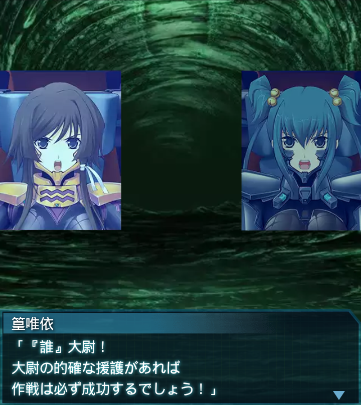
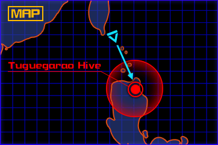
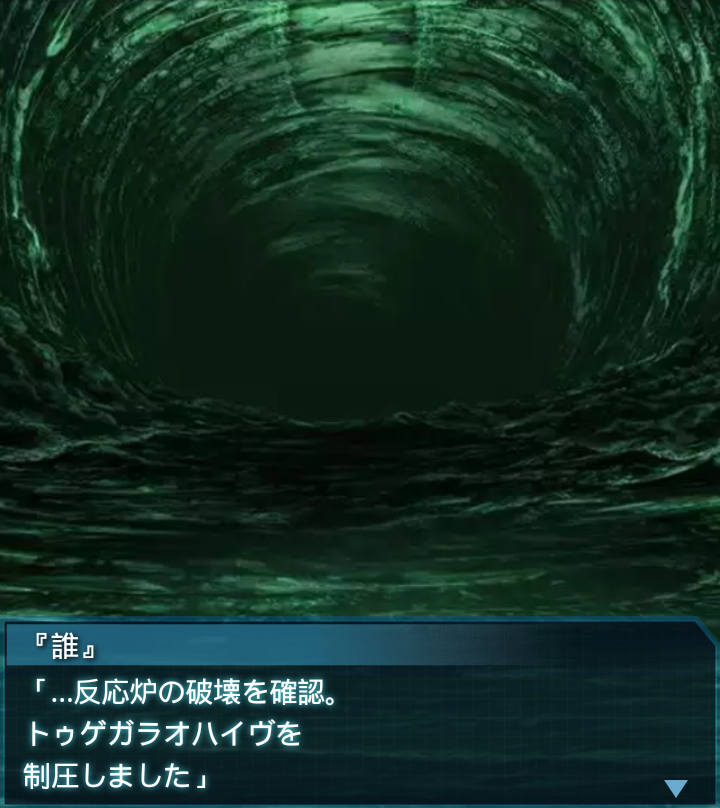

フィリピン・トゥゲガラオ2
「ＨＱより全戦術機部隊！
作戦を第４段階に移行！
繰り返す――」
『誰』
「よし、一気に進むぞ！
ファング中隊が作戦の要だ、
傷一つ付けさせるなッ！！」
崔亦菲
「――暴風１了解ッ！
絶対にＳ－１１を大広間に届ける
わよ！暴風全機、進めぇっ！」
『誰』
…高性能爆弾Ｓ－１１。
反応炉破壊用の爆弾とは言え、
肉薄しなければ効果は薄い。
『誰』
いかに篁中尉と言えども、
反応炉に迫るのは至難の業。
俺達が絶対に道を作る！！

篁唯依
「『誰』大尉！
大尉の的確な援護があれば
作戦は必ず成功するでしょう！」
崔亦菲
「無茶しすぎないで下さいよ！？
暴れるのは私達暴風に任せて
タカムラ中尉を頼みます！」

『誰』
「――了解ッッ！！」


『誰』
「…反応炉の破壊を確認。
トゥゲガラオハイヴを
制圧しました」
神宮司まりも
「ＨＱ了解――
大尉、見事な指揮でした」
神宮司まりも
「先程、先行輸送船団との交信に
成功し、ルソン島北西９０Ｋｍの
地点にいることがわかりました」
『誰』
「…間一髪だったな。
沿岸部の残存ＢＥＴＡを片付け
終わった頃に沖を通過だ」

香月夕呼
「ただ、悪い知らせもあるわ。
残念だけどひと足遅かった。
マニラは壊滅的状態ね」
香月夕呼
「何とか補給はできそうだけど、
こんな場繋ぎじゃこの先保たない
――というわけで」
香月夕呼
「マレーシアに寄り道するわ。
ブルネイに向かう。状況的に
ここはまだ無事でしょうから」
香月夕呼
「ま、寄り道って程でも無いわ。
それで補給ができるんなら、
決して無駄じゃない」
香月夕呼
「そんな訳だから、さっさと
戻って来なさい。帰り道油断して
怪我するんじゃないわよ？」
『誰』
「「「了解ッ！」」」